| Gross P&L | −Rs 1,195 |
| Net of costs | −Rs 2,042 (costs Rs 847) |
| Trades | 61 L 14 / S 47 |
| Win rate | 48% (29W / 32L) |
| Exit reason | # | P&L |
|---|---|---|
| STOPLOSS | 19 | −Rs 1,054 |
| SIGNAL_FLIP | 10 | −Rs 460 |
| FLAT_FORCE_EXIT | 13 | +Rs 38 |
| TIME_EXIT | 18 | +Rs 123 |
| TARGET | 1 | +Rs 158 |
| Held everything to 15:15 instead of exiting | −Rs 358 |
| Stop-losses that later reversed our way (10 trades) | +Rs 908 |
| Perfect-exit ceiling after our exits (unrealistic upper bound) | +Rs 2,651 |
| Max favourable excursion from entry (if every trade exited at its best tick) | +Rs 3,396 |
| Gross P&L | −Rs 29 |
| Net of costs | −Rs 1,091 (costs Rs 1,062) |
| Trades | 59 L 27 / S 32 |
| Win rate | 51% (30W / 29L) |
| Exit reason | # | P&L |
|---|---|---|
| STOPLOSS | 15 | −Rs 1,411 |
| SIGNAL_FLIP | 18 | −Rs 240 |
| FLAT_FORCE_EXIT | 15 | −Rs 32 |
| TIME_EXIT | 8 | +Rs 819 |
| TARGET | 3 | +Rs 834 |
| Held everything to 15:15 instead of exiting | +Rs 324 |
| Stop-losses that later reversed our way (6 trades) | +Rs 1,651 |
| Perfect-exit ceiling after our exits (unrealistic upper bound) | +Rs 6,918 |
| Max favourable excursion from entry (if every trade exited at its best tick) | +Rs 9,021 |
Every closed trade was replayed against Kite 5-minute candles fetched after the close. Three questions per trade: what would the P&L have been if we simply held to 15:15 (hold delta), which stop-losses reversed and went our way afterwards, and how far did price travel in our favour after we exited (ceiling). Trades exited at the 15:15 force-close have nothing after them and count as zero.
| Stock | Dir | Exit | Time | P&L | Hold Δ | Ceiling |
|---|---|---|---|---|---|---|
| PAYTM | LONG | STOPLOSS | 09:36→10:06 | +Rs 136 | +Rs 59 | +Rs 451 |
| SRF | SHORT | STOPLOSS | 09:36→10:06 | −Rs 376 | +Rs 355 | +Rs 355 |
| SWIGGY | LONG | STOPLOSS | 09:36→10:20 | +Rs 129 | −Rs 16 | +Rs 312 |
| INDIANB | SHORT | STOPLOSS | 10:10→11:25 | −Rs 185 | +Rs 129 | +Rs 202 |
| COCHINSHIP | LONG | SIGNAL_FLIP | 09:36→10:43 | +Rs 65 | −Rs 53 | +Rs 186 |
| DIXON | SHORT | STOPLOSS | 10:10→11:57 | −Rs 85 | +Rs 114 | +Rs 144 |
| PNB | LONG | SIGNAL_FLIP | 09:36→10:43 | −Rs 1 | +Rs 22 | +Rs 104 |
| HUDCO | SHORT | STOPLOSS | 10:10→11:45 | −Rs 120 | +Rs 94 | +Rs 104 |
| COLPAL | SHORT | STOPLOSS | 10:10→11:13 | −Rs 95 | +Rs 71 | +Rs 96 |
| COALINDIA | SHORT | STOPLOSS | 09:36→10:06 | −Rs 115 | +Rs 49 | +Rs 91 |
| Stock | Dir | Exit | Time | P&L | Hold Δ | Ceiling |
|---|---|---|---|---|---|---|
| RRKABEL | SHORT | TARGET | 10:24→11:25 | +Rs 526 | +Rs 45 | +Rs 806 |
| SWIGGY | LONG | STOPLOSS | 09:36→10:55 | +Rs 374 | −Rs 98 | +Rs 707 |
| RAYMOND | SHORT | FLAT_FORCE_EXIT | 10:24→13:39 | +Rs 4 | +Rs 274 | +Rs 614 |
| ECLERX | SHORT | TIME_EXIT | 15:01→15:15 | +Rs 255 | +Rs 169 | +Rs 600 |
| AEQUS | SHORT | STOPLOSS | 10:24→10:44 | −Rs 189 | +Rs 543 | +Rs 543 |
| SRF | SHORT | STOPLOSS | 09:36→10:06 | −Rs 574 | +Rs 543 | +Rs 543 |
| PAYTM | LONG | STOPLOSS | 09:36→10:06 | +Rs 124 | +Rs 54 | +Rs 414 |
| ZYDUSLIFE | SHORT | STOPLOSS | 09:36→10:06 | −Rs 211 | +Rs 346 | +Rs 346 |
| COCHINSHIP | LONG | SIGNAL_FLIP | 09:36→10:45 | +Rs 80 | −Rs 64 | +Rs 254 |
| KALYANKJIL | LONG | STOPLOSS | 14:57→07:53 | −Rs 77 | +Rs 123 | +Rs 177 |
62 dashboard BUYs at open; v5 entered 6, v5_wide is not in the scorer's engine list. Of the 56 skipped: 11 rose more than 0.5% (wrong to skip), 21 fell more than 0.5% (right to skip), 22 flat. Average move of the skipped set −0.09%, so skipping was net neutral. The gross upside on the 11 wrong calls at v5's median position size (Rs 11,000) was:
| Stock | Day move | At Rs 11K |
|---|---|---|
| IGL | +4.63% | +Rs 509 |
| ALOKINDS | +4.51% | +Rs 496 |
| KAYNES | +3.04% | +Rs 334 |
| MGL | +2.29% | +Rs 252 |
| CROMPTON | +2.09% | +Rs 230 |
| GNFC | +1.28% | +Rs 141 |
| RITES | +0.84% | +Rs 92 |
| IRFC | +0.79% | +Rs 87 |
| SJVN | +0.77% | +Rs 85 |
| JIOFIN | +0.71% | +Rs 78 |
| ACC | +0.54% | +Rs 59 |
| Total gross | +Rs 2,364 |
green candle up / green marker = our entryred candle downpurple marker = our exitdashed lines = entry / exit price
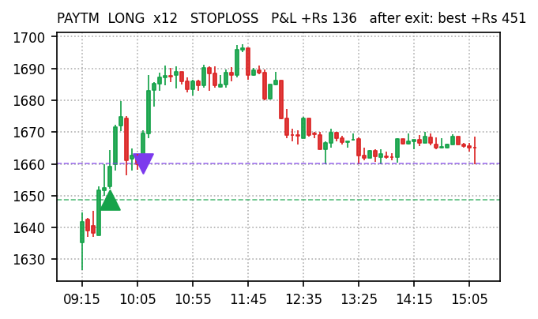
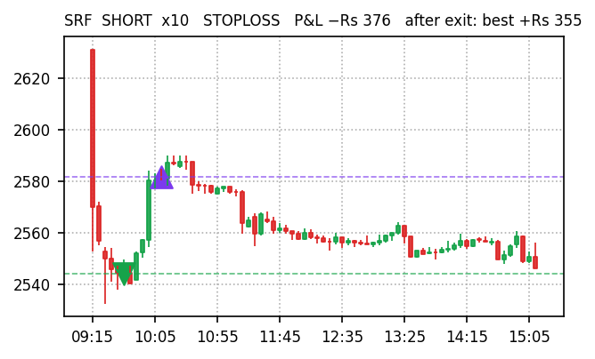
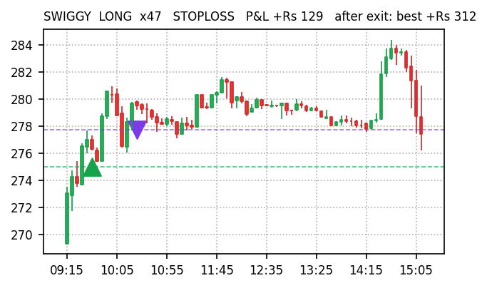
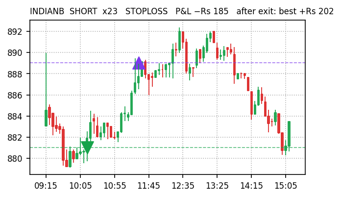
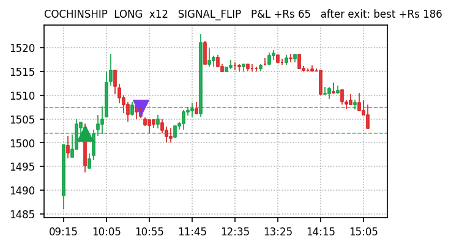
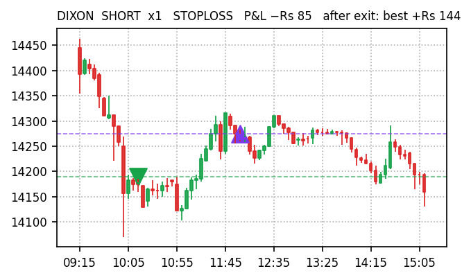
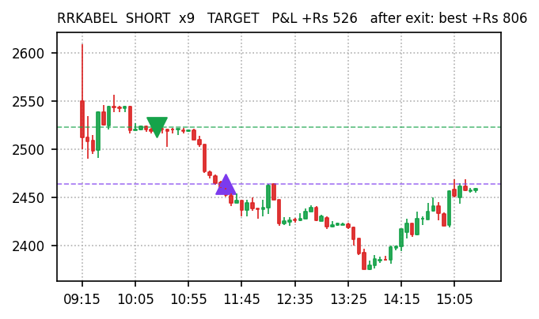
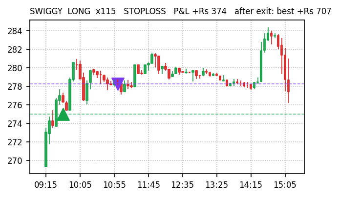
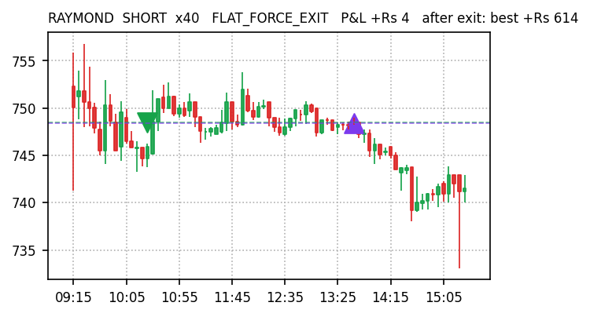
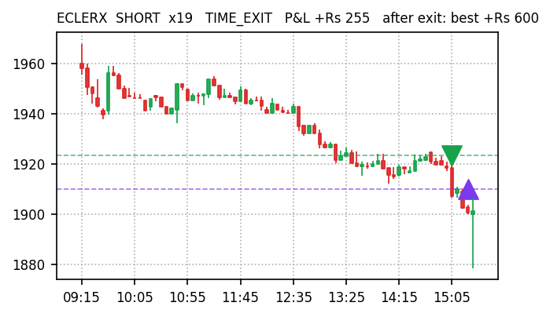
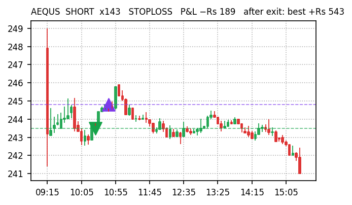
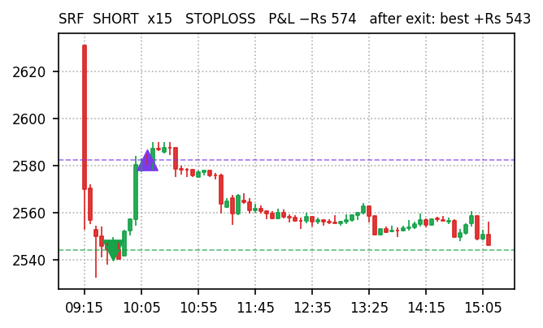
Sources: docs/paper-trades/{v5,v5_wide}/2026-09-04.json · Kite historical 5-min · docs/reports/missed-trades-2026-09-04.md · engine logs. Paper trading only, no real orders.